cTWAS Results Summary-AD GWAS (Bellenguez et al. 2022)
XSun
2026-06-19
Last updated: 2026-06-20
Checks: 6 1
Knit directory: AD_analysis/
This reproducible R Markdown analysis was created with workflowr (version 1.7.0). The Checks tab describes the reproducibility checks that were applied when the results were created. The Past versions tab lists the development history.
The R Markdown file has unstaged changes. To know which version of
the R Markdown file created these results, you’ll want to first commit
it to the Git repo. If you’re still working on the analysis, you can
ignore this warning. When you’re finished, you can run
wflow_publish to commit the R Markdown file and build the
HTML.
Great job! The global environment was empty. Objects defined in the global environment can affect the analysis in your R Markdown file in unknown ways. For reproduciblity it’s best to always run the code in an empty environment.
The command set.seed(20260610) was run prior to running
the code in the R Markdown file. Setting a seed ensures that any results
that rely on randomness, e.g. subsampling or permutations, are
reproducible.
Great job! Recording the operating system, R version, and package versions is critical for reproducibility.
Nice! There were no cached chunks for this analysis, so you can be confident that you successfully produced the results during this run.
Great job! Using relative paths to the files within your workflowr project makes it easier to run your code on other machines.
Great! You are using Git for version control. Tracking code development and connecting the code version to the results is critical for reproducibility.
The results in this page were generated with repository version ee66032. See the Past versions tab to see a history of the changes made to the R Markdown and HTML files.
Note that you need to be careful to ensure that all relevant files for
the analysis have been committed to Git prior to generating the results
(you can use wflow_publish or
wflow_git_commit). workflowr only checks the R Markdown
file, but you know if there are other scripts or data files that it
depends on. Below is the status of the Git repository when the results
were generated:
Unstaged changes:
Modified: analysis/ctwas_Bellenguez.Rmd
Note that any generated files, e.g. HTML, png, CSS, etc., are not included in this status report because it is ok for generated content to have uncommitted changes.
These are the previous versions of the repository in which changes were
made to the R Markdown (analysis/ctwas_Bellenguez.Rmd) and
HTML (docs/ctwas_Bellenguez.html) files. If you’ve
configured a remote Git repository (see ?wflow_git_remote),
click on the hyperlinks in the table below to view the files as they
were in that past version.
| File | Version | Author | Date | Message |
|---|---|---|---|---|
| Rmd | ee66032 | XSun | 2026-06-20 | update |
| html | ee66032 | XSun | 2026-06-20 | update |
| Rmd | 6412604 | XSun | 2026-06-19 | update |
| html | 6412604 | XSun | 2026-06-19 | update |
| Rmd | 1fb2cf3 | XSun | 2026-06-19 | update |
| html | 1fb2cf3 | XSun | 2026-06-19 | update |
| Rmd | b0369d6 | XSun | 2026-06-19 | update |
| html | b0369d6 | XSun | 2026-06-19 | update |
| Rmd | 59c1830 | XSun | 2026-06-19 | update |
| html | 59c1830 | XSun | 2026-06-19 | update |
Analysis details
The cTWAS analysis was performed using run_ctwas.R
located at
/project/xinhe/xsun/AD_jubao/3.ctwas/run_ctwas.R.
Key steps:
- GWAS preprocessing: GWAS summary statistics from Bellenguez et
al. 2022 were read and preprocessed with
read_gwas()andpreprocess_z_snp()(dropping multi-allelic and strand-ambiguous variants). - Weight preprocessing: Prediction weights (PredictDB
format, RASQUAL-based) were preprocessed with
preprocess_weights()for each condition (naive, SL1344). For eQTL, protein-coding gene filtering was applied; for caQTL it was not. - Gene z-score computation: Gene-level z-scores were
computed with
compute_gene_z(). - Region data assembly: Region data was assembled
with
assemble_region_data()usingthin = 1andadjust_boundary_genes = TRUE. - Parameter estimation: Parameters were estimated
with
est_param()usinggroup_prior_var_structure = "shared_all",null_method = "ctwas",niter_prefit = 3,niter = 30,min_gene = 1,min_var = 2,min_p_single_effect = 0.8. - Fine-mapping: Fine-mapping was performed with
finemap_regions()usingL = 5andnull_method = "ctwas".
LD reference: UK Biobank LD reference (b38) stored
at /project2/compbio/UKB_LD_REF/UKB_LDR_0.1_b38/.
Weight files (RASQUAL-based):
- caQTL:
caQTL_naive_RASQUAL.db,caQTL_SL1344_RASQUAL.db - eQTL:
eQTL_naive_RASQUAL.db,eQTL_SL1344_RASQUAL.db
Molecular traits used in weights
caQTL
We compare the ATAC peaks present in the naive and SL1344 caQTL weight databases.
weight_dir <- "/project/xinhe/xsun/AD_jubao/data/QTL_pmid29379200/RASQUAL/weights_rasqual"
db_naive <- dbConnect(SQLite(), file.path(weight_dir, "caQTL_naive_RASQUAL.db"))
peaks_naive <- dbGetQuery(db_naive, "SELECT gene FROM extra")$gene
dbDisconnect(db_naive)
db_sl <- dbConnect(SQLite(), file.path(weight_dir, "caQTL_SL1344_RASQUAL.db"))
peaks_sl <- dbGetQuery(db_sl, "SELECT gene FROM extra")$gene
dbDisconnect(db_sl)
n_naive <- length(peaks_naive)
n_sl <- length(peaks_sl)
n_shared <- length(intersect(peaks_naive, peaks_sl))
n_total <- length(union(peaks_naive, peaks_sl))
grid.newpage()
draw.pairwise.venn(
area1 = n_naive,
area2 = n_sl,
cross.area = n_shared,
category = c("Naive", "SL1344"),
scaled = TRUE,
fill = c("#E69F00", "#56B4E9"),
alpha = 0.5,
cat.pos = c(-20, 20),
cat.dist = 0.05,
cat.cex = 1.2,
cex = 1.1,
label.col = "black",
ext.text = FALSE,
print.mode = c("raw", "percent")
)(polygon[GRID.polygon.11], polygon[GRID.polygon.12], polygon[GRID.polygon.13], polygon[GRID.polygon.14], text[GRID.text.15], text[GRID.text.16], text[GRID.text.17], text[GRID.text.18], text[GRID.text.19]) grid.text("caQTL: Peaks in Weight Databases", y = 0.95, gp = gpar(fontsize = 14))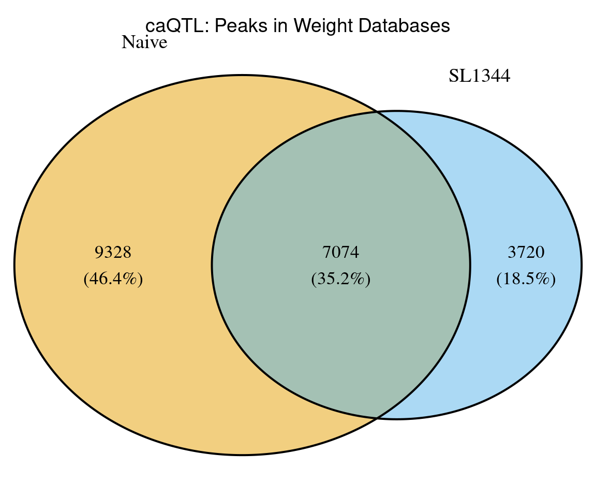
| Version | Author | Date |
|---|---|---|
| 6412604 | XSun | 2026-06-19 |
eQTL
We compare the genes present in the naive and SL1344 eQTL weight databases.
db_naive_e <- dbConnect(SQLite(), file.path(weight_dir, "eQTL_naive_RASQUAL.db"))
genes_naive <- dbGetQuery(db_naive_e, "SELECT gene FROM extra")$gene
dbDisconnect(db_naive_e)
db_sl_e <- dbConnect(SQLite(), file.path(weight_dir, "eQTL_SL1344_RASQUAL.db"))
genes_sl <- dbGetQuery(db_sl_e, "SELECT gene FROM extra")$gene
dbDisconnect(db_sl_e)
n_naive_e <- length(genes_naive)
n_sl_e <- length(genes_sl)
n_shared_e <- length(intersect(genes_naive, genes_sl))
grid.newpage()
draw.pairwise.venn(
area1 = n_naive_e,
area2 = n_sl_e,
cross.area = n_shared_e,
category = c("Naive", "SL1344"),
scaled = TRUE,
fill = c("#E69F00", "#56B4E9"),
alpha = 0.5,
cat.pos = c(-20, 20),
cat.dist = 0.05,
cat.cex = 1.2,
cex = 1.1,
label.col = "black",
ext.text = FALSE,
print.mode = c("raw", "percent")
)(polygon[GRID.polygon.21], polygon[GRID.polygon.22], polygon[GRID.polygon.23], polygon[GRID.polygon.24], text[GRID.text.25], text[GRID.text.26], text[GRID.text.27], text[GRID.text.28], text[GRID.text.29]) grid.text("eQTL: Genes in Weight Databases", y = 0.95, gp = gpar(fontsize = 14))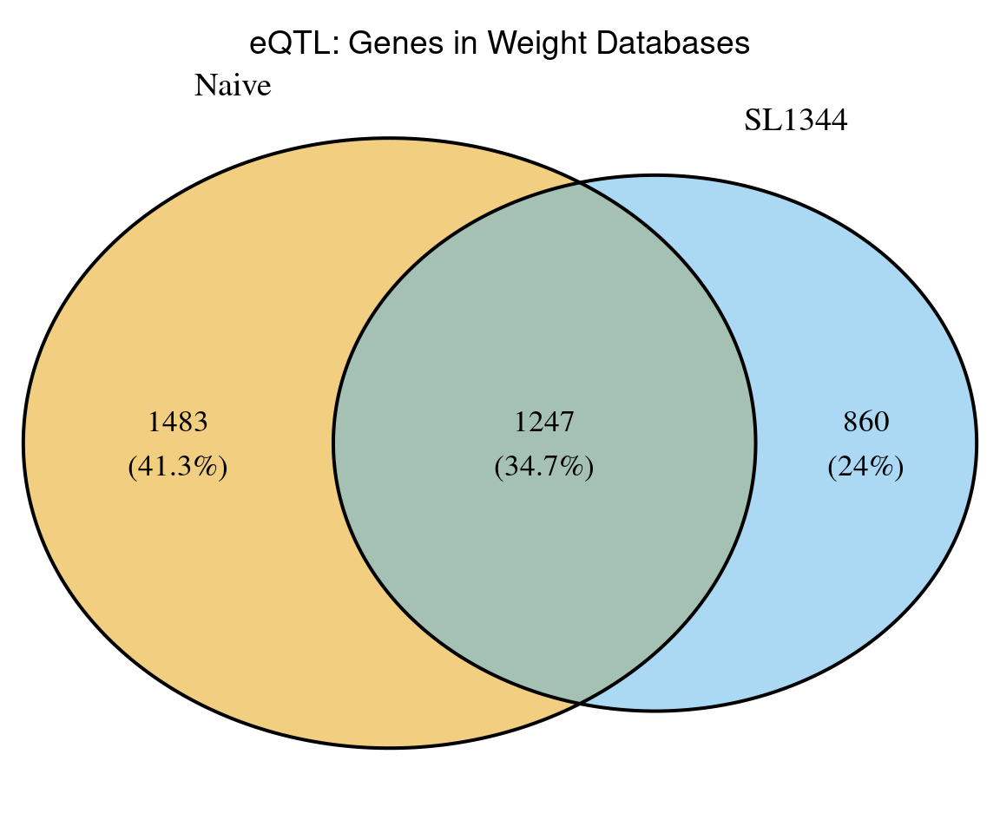
| Version | Author | Date |
|---|---|---|
| ee66032 | XSun | 2026-06-20 |
cTWAS results
caQTL
param_caQTL <- readRDS(file.path(outputdir, "caQTL", "AD.caQTL.param.shared_all.RDS"))
Parameters and Enrichment
ctwas_param_caQTL <- summarize_param(param_caQTL, gwas_n, enrichment_test = "fisher")
ctwas_param_caQTL$group_size
naive|caQTL SL1344|caQTL SNP
13252 8747 6661044
$group_prior
naive|caQTL SL1344|caQTL SNP
1.617034e-03 4.054799e-03 4.845619e-05
$group_prior_var
naive|caQTL SL1344|caQTL SNP
17.35103 17.35103 17.35103
$log_enrichment
naive|caQTL SL1344|caQTL
3.507689 4.426996
$log_enrichment_se
naive|caQTL SL1344|caQTL
0.2229091 0.1765749
$enrichment_pval
naive|caQTL SL1344|caQTL
1.929299e-24 3.964290e-53
$group_pve
naive|caQTL SL1344|caQTL SNP
0.0007626785 0.0012623197 0.0114876827
$total_pve
[1] 0.01351268
$prop_heritability
naive|caQTL SL1344|caQTL SNP
0.05644169 0.09341741 0.85014090 Heritability Pie Chart
plot_piechart_topn(ctwas_param_caQTL,
colors = c("#E69F00", "#56B4E9"),
by = "category",
title = "caQTL - Percent of Heritability (PVE)")
Fine-mapping results (PIP > 0.8)
finemap_caQTL <- readRDS(file.path(outputdir, "caQTL",
"AD.caQTL.shared_all.L5.finemap_regions_res.RDS"))
fm_caQTL <- finemap_caQTL$finemap_res
peaks_high_pip <- fm_caQTL[fm_caQTL$type != "SNP" & fm_caQTL$susie_pip > 0.8, ]
peaks_high_pip <- peaks_high_pip[order(-peaks_high_pip$susie_pip), ]4 peaks with PIP > 0.8:
if (nrow(peaks_high_pip) > 0) {
datatable(peaks_high_pip,
caption = "caQTL peaks with PIP > 0.8",
options = list(pageLength = 20, scrollX = TRUE))
} else {
cat("No peaks found with PIP > 0.8.")
}Locus zoom plots
Locus zoom plots for regions containing ATAC peaks with PIP > 0.8.
ens_db <- EnsDb.Hsapiens.v86
weights_caQTL <- readRDS(file.path(outputdir, "caQTL", "AD.caQTL.preprocessed.weights.RDS"))
snp_map <- readRDS("/project2/xinhe/shared_data/multigroup_ctwas/LD_region_info/snp_map.RDS")
mapping_table_caQTL <- readRDS("/project/xinhe/xsun/AD_jubao/data/QTL_pmid29379200/ATAC_peak_mapping.RDS")
fm_caQTL_anno <- fm_caQTL
fm_caQTL_anno$pval <- z2p(fm_caQTL_anno$z)
fm_caQTL_anno <- anno_finemap_res(fm_caQTL_anno,
snp_map = snp_map,
mapping_table = mapping_table_caQTL,
add_gene_annot = TRUE,
map_by = "molecular_id",
drop_unmapped = TRUE,
add_position = TRUE,
use_gene_pos = "mid")2026-06-20 19:20:50 INFO::Annotating fine-mapping result...
2026-06-20 19:20:51 INFO::Map molecular traits to genes
2026-06-20 19:21:15 INFO::Add gene positions
2026-06-20 19:21:16 INFO::Add SNP positionstop_regions_caQTL <- unique(fm_caQTL_anno$region_id[fm_caQTL_anno$group != "SNP" & fm_caQTL_anno$susie_pip > 0.8])for (region_id in top_regions_caQTL) {
cat(sprintf("\n#### Region: %s\n\n", region_id))
print(make_locusplot(
fm_caQTL_anno,
region_id = region_id,
ens_db = ens_db,
weights = weights_caQTL,
highlight_pip = 0.8,
filter_protein_coding_genes = FALSE,
filter_cs = F,
color_pval_by = "cs",
color_pip_by = "cs",
panel.heights = c(4, 4, 1, 4)
))
cat("\n\n")
}Region: 2_158720570_160913222
2026-06-20 19:21:33 INFO::focal id: ATAC_peak_147263|SL1344_caQTL 2026-06-20 19:21:33 INFO::focal molecular trait: ATAC_peak_147263 SL1344 caQTL 2026-06-20 19:21:33 INFO::Range of locus: chr2:158720695-160913244 2026-06-20 19:21:34 INFO::focal molecular trait QTL positions: 160428726
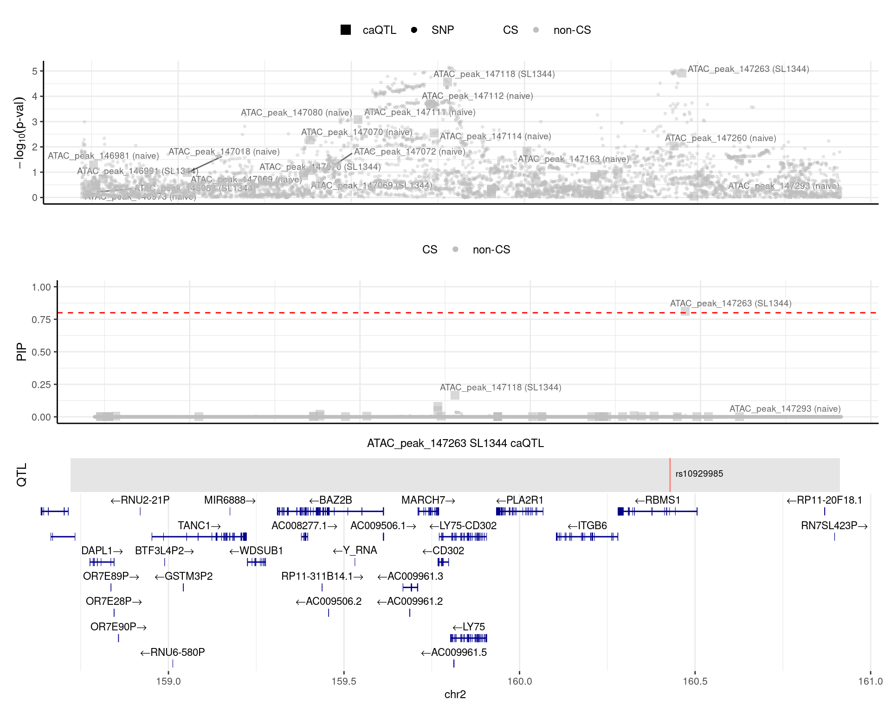
| Version | Author | Date |
|---|---|---|
| 6412604 | XSun | 2026-06-19 |
Region: 6_40377376_42070983
2026-06-20 19:21:35 INFO::focal id: ATAC_peak_230321|naive_caQTL 2026-06-20 19:21:35 INFO::focal molecular trait: ATAC_peak_230321 naive caQTL 2026-06-20 19:21:35 INFO::Range of locus: chr6:40377740-42070811 2026-06-20 19:21:35 INFO::focal molecular trait QTL positions: 41186912
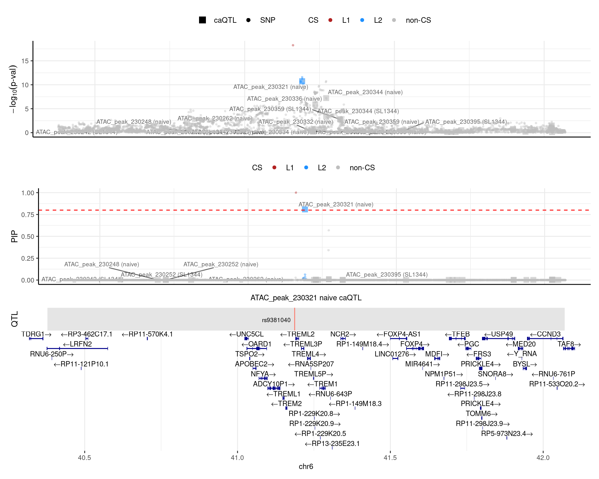
| Version | Author | Date |
|---|---|---|
| 6412604 | XSun | 2026-06-19 |
Region: 7_7769121_9083793
2026-06-20 19:21:38 INFO::focal id: ATAC_peak_244110|SL1344_caQTL 2026-06-20 19:21:38 INFO::focal molecular trait: ATAC_peak_244110 SL1344 caQTL 2026-06-20 19:21:38 INFO::Range of locus: chr7:7769021-9083496 2026-06-20 19:21:38 INFO::focal molecular trait QTL positions: 7815324
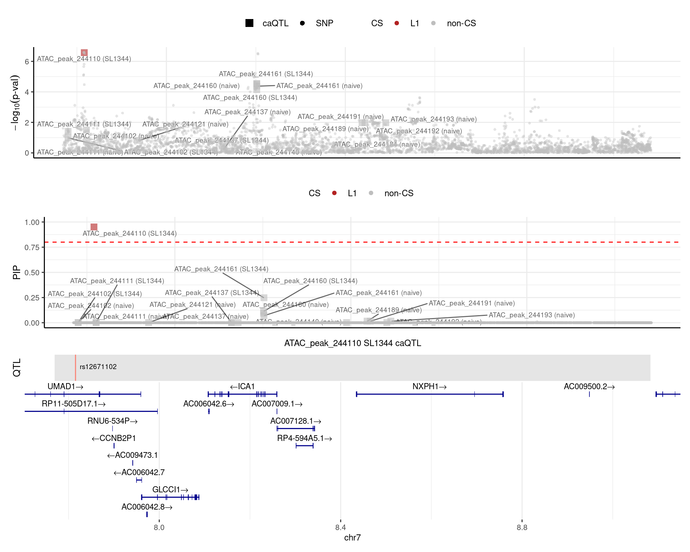
| Version | Author | Date |
|---|---|---|
| 6412604 | XSun | 2026-06-19 |
Region: 11_84670229_86908259
2026-06-20 19:21:39 INFO::focal id: ATAC_peak_51975|naive_caQTL 2026-06-20 19:21:39 INFO::focal molecular trait: ATAC_peak_51975 naive caQTL 2026-06-20 19:21:39 INFO::Range of locus: chr11:84670331-86907936 2026-06-20 19:21:39 INFO::focal molecular trait QTL positions: 86156833
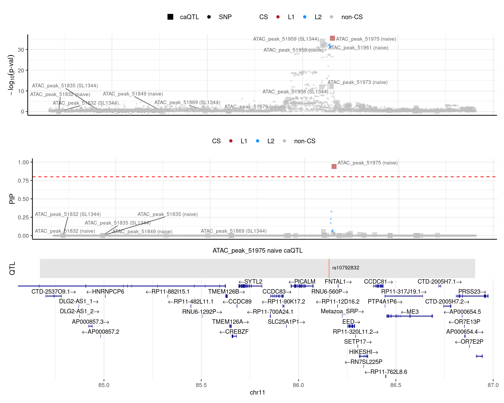
| Version | Author | Date |
|---|---|---|
| 6412604 | XSun | 2026-06-19 |
Peak Sets
A peak set is defined as all caQTL peaks that belong to the same credible set (CS) within the same LD region. The PIP of a peak set is the sum of the individual peak PIPs.
peaks_in_cs_caQTL <- fm_caQTL[fm_caQTL$type == "caQTL" & !is.na(fm_caQTL$cs), ]
mapping_caQTL <- readRDS("/project/xinhe/xsun/AD_jubao/data/QTL_pmid29379200/ATAC_peak_mapping.RDS")
peaks_annot_caQTL <- merge(peaks_in_cs_caQTL, mapping_caQTL, by = "molecular_id", all.x = TRUE)
peak_sets_caQTL <- do.call(rbind, lapply(
split(peaks_annot_caQTL, list(peaks_annot_caQTL$region_id, peaks_annot_caQTL$cs), drop = TRUE),
function(x) {
region_parts <- strsplit(x$region_id[1], "_")[[1]]
data.frame(
region_chr = as.integer(region_parts[1]),
region_id = x$region_id[1],
cs = x$cs[1],
n_peaks = nrow(x),
sum_pip = sum(x$susie_pip),
peaks = paste(x$molecular_id, collapse = ", "),
contexts = paste(x$context, collapse = ", "),
peak_coords = paste0("chr", x$chrom, ":", x$start, "-", x$end, collapse = "; "),
stringsAsFactors = FALSE
)
}
))
peak_sets_caQTL <- peak_sets_caQTL[order(-peak_sets_caQTL$sum_pip), ]
rownames(peak_sets_caQTL) <- NULL
cat("**Total peak sets:**", nrow(peak_sets_caQTL), "\n")**Total peak sets:** 19 PIP Distribution of Peak Sets
hist(peak_sets_caQTL$sum_pip, breaks = 20, col = "steelblue", border = "white",
main = "Distribution of peak set PIPs",
xlab = "Sum PIP per peak set", ylab = "Count")
abline(v = 0.8, col = "red", lty = 2)
text(0.8, par("usr")[4] * 0.9, "PIP = 0.8", pos = 2, col = "red", cex = 0.8)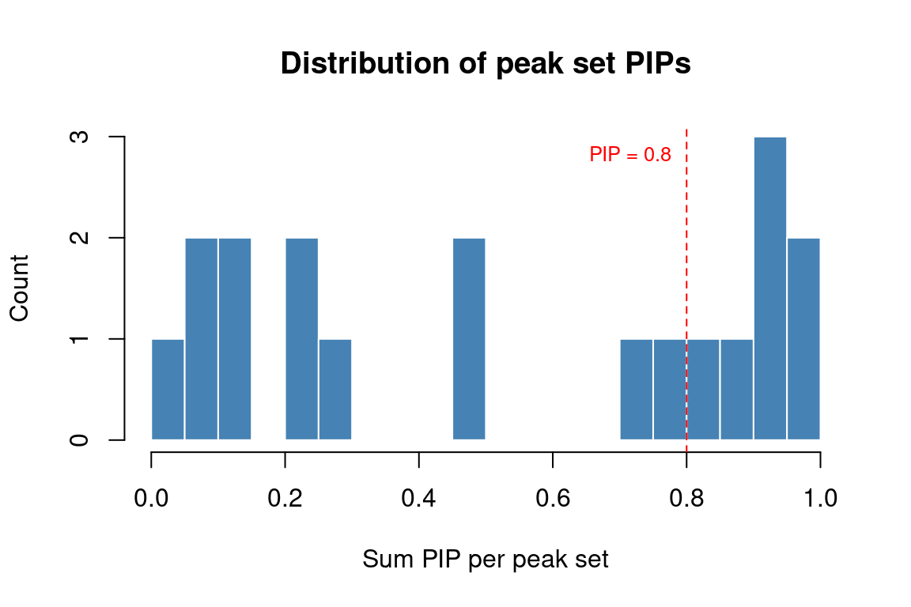
High-Confidence Peak Sets (sum PIP > 0.8)
high_caQTL <- peak_sets_caQTL[peak_sets_caQTL$sum_pip > 0.8, ]
if (nrow(high_caQTL) > 0) {
display_high_caQTL <- high_caQTL[, c("region_chr", "region_id", "cs", "n_peaks",
"sum_pip", "peaks", "contexts", "peak_coords")]
colnames(display_high_caQTL) <- c("Chr", "Region", "CS", "N peaks",
"Sum PIP", "Peaks", "Contexts", "Peak coordinates")
datatable(display_high_caQTL, rownames = FALSE,
options = list(pageLength = 25, scrollX = TRUE),
caption = "Peak sets with sum PIP > 0.8") %>%
formatRound("Sum PIP", digits = 4)
} else {
cat("No peak sets with sum PIP > 0.8.\n")
}Locus zoom plots for high-confidence peak sets
Locus zoom plots for regions containing peak sets with sum PIP > 0.8.
top_regions_peakset_caQTL <- unique(high_caQTL$region_id)for (region_id in top_regions_peakset_caQTL) {
cat(sprintf("\n#### Region: %s\n\n", region_id))
print(make_locusplot(
fm_caQTL_anno,
region_id = region_id,
ens_db = ens_db,
weights = weights_caQTL,
highlight_pip = 0.8,
filter_protein_coding_genes = FALSE,
filter_cs = F,
color_pval_by = "cs",
color_pip_by = "cs",
panel.heights = c(4, 4, 1, 4)
))
cat("\n\n")
}Region: 14_90830516_92665954
2026-06-20 19:21:45 INFO::focal id: ATAC_peak_85694|SL1344_caQTL 2026-06-20 19:21:45 INFO::focal molecular trait: ATAC_peak_85694 SL1344 caQTL 2026-06-20 19:21:45 INFO::Range of locus: chr14:90830416-92665770 2026-06-20 19:21:45 INFO::focal molecular trait QTL positions: 92489041
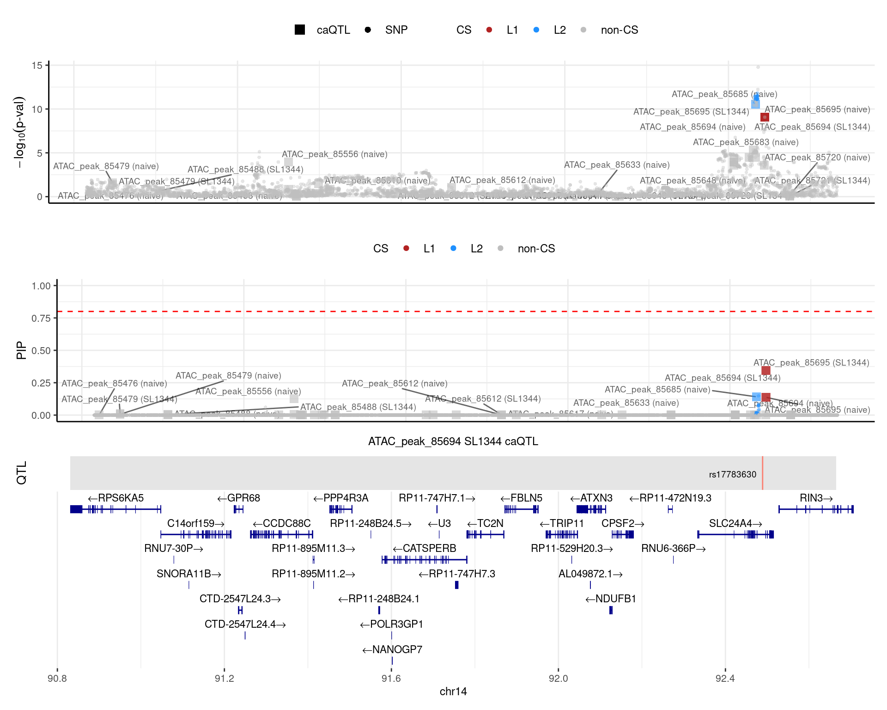
Region: 7_7769121_9083793
2026-06-20 19:21:47 INFO::focal id: ATAC_peak_244110|SL1344_caQTL 2026-06-20 19:21:47 INFO::focal molecular trait: ATAC_peak_244110 SL1344 caQTL 2026-06-20 19:21:47 INFO::Range of locus: chr7:7769021-9083496 2026-06-20 19:21:48 INFO::focal molecular trait QTL positions: 7815324
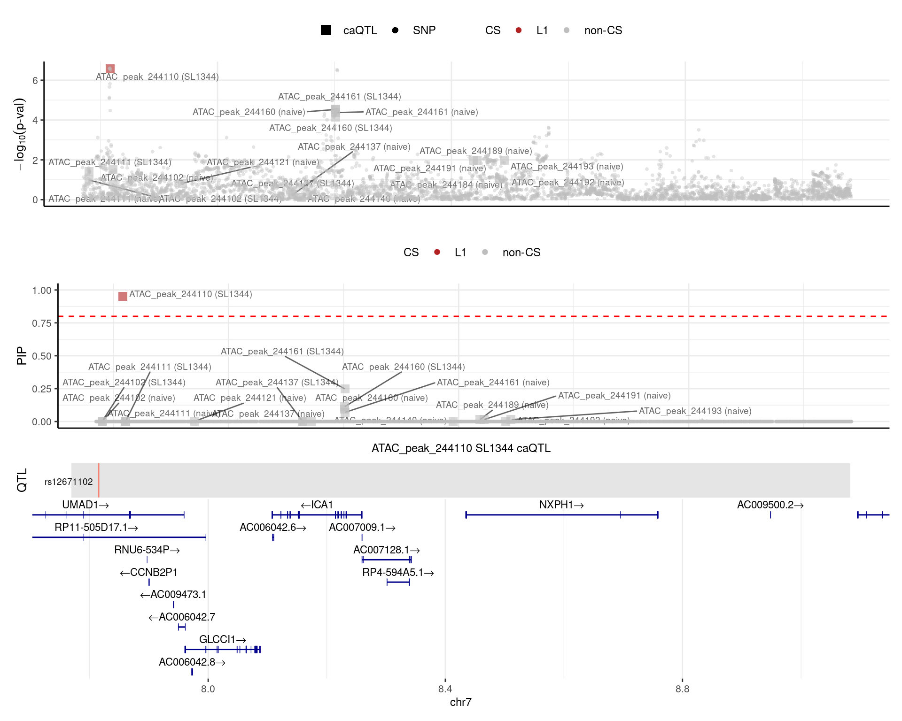
Region: 11_84670229_86908259
2026-06-20 19:21:49 INFO::focal id: ATAC_peak_51975|naive_caQTL 2026-06-20 19:21:49 INFO::focal molecular trait: ATAC_peak_51975 naive caQTL 2026-06-20 19:21:49 INFO::Range of locus: chr11:84670331-86907936 2026-06-20 19:21:49 INFO::focal molecular trait QTL positions: 86156833
Region: 16_81738931_82714123
2026-06-20 19:21:51 INFO::focal id: ATAC_peak_104451|SL1344_caQTL 2026-06-20 19:21:51 INFO::focal molecular trait: ATAC_peak_104451 SL1344 caQTL 2026-06-20 19:21:51 INFO::Range of locus: chr16:81738831-82713965 2026-06-20 19:21:51 INFO::focal molecular trait QTL positions: 81867248
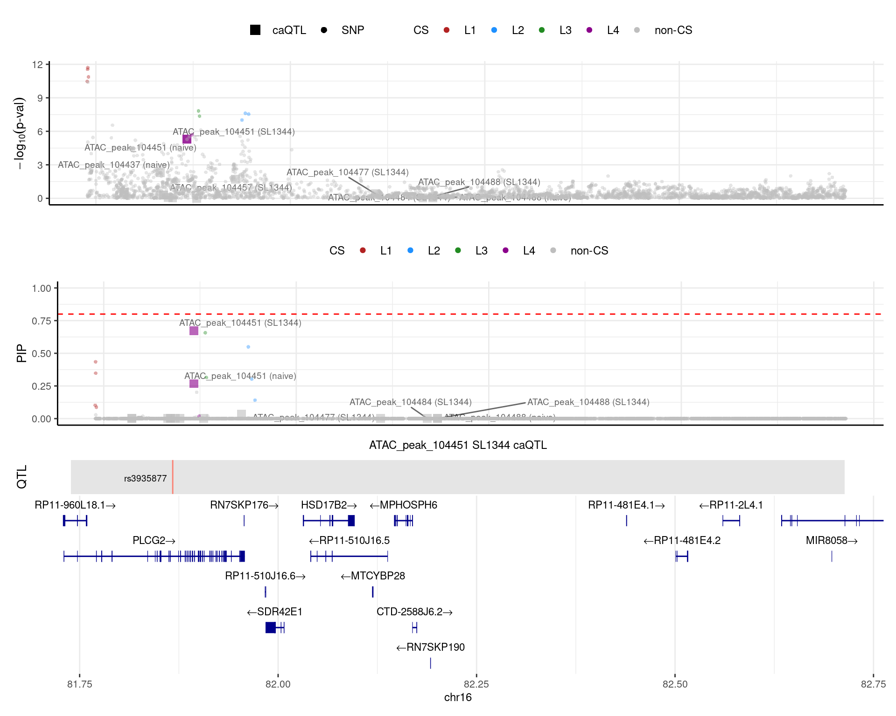
Region: 7_25869935_28320690
2026-06-20 19:21:55 INFO::focal id: ATAC_peak_245948|SL1344_caQTL 2026-06-20 19:21:55 INFO::focal molecular trait: ATAC_peak_245948 SL1344 caQTL 2026-06-20 19:21:55 INFO::Range of locus: chr7:25869975-28319556 2026-06-20 19:21:55 INFO::focal molecular trait QTL positions: 28135367
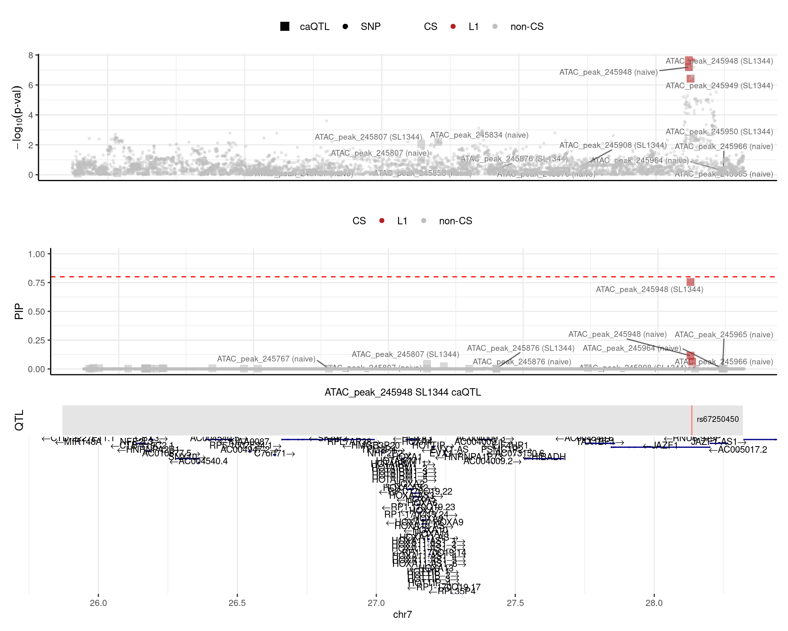
Region: 5_86471473_88094174
2026-06-20 19:21:57 INFO::focal id: ATAC_peak_214106|SL1344_caQTL 2026-06-20 19:21:57 INFO::focal molecular trait: ATAC_peak_214106 SL1344 caQTL 2026-06-20 19:21:57 INFO::Range of locus: chr5:86471473-88093891 2026-06-20 19:21:57 INFO::focal molecular trait QTL positions: 86997803
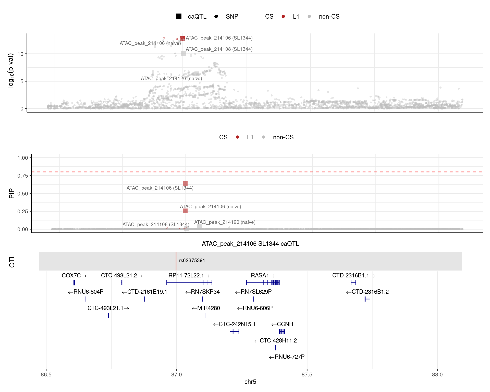
Region: 6_40377376_42070983
2026-06-20 19:21:58 INFO::focal id: ATAC_peak_230321|naive_caQTL 2026-06-20 19:21:58 INFO::focal molecular trait: ATAC_peak_230321 naive caQTL 2026-06-20 19:21:58 INFO::Range of locus: chr6:40377740-42070811 2026-06-20 19:21:59 INFO::focal molecular trait QTL positions: 41186912
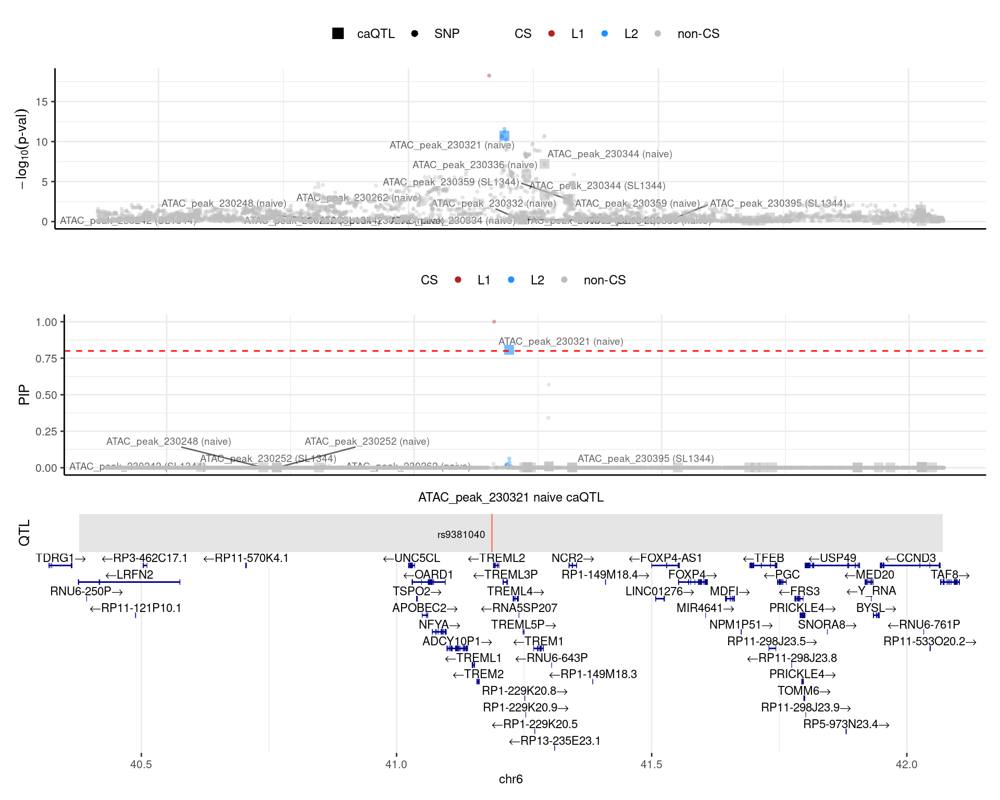
eQTL
param_eQTL <- readRDS(file.path(outputdir, "eQTL", "AD.eQTL.param.shared_all.RDS"))
Parameters and Enrichment
ctwas_param_eQTL <- summarize_param(param_eQTL, gwas_n, enrichment_test = "fisher")
ctwas_param_eQTL$group_size
naive|eQTL SL1344|eQTL SNP
2128 1597 6661044
$group_prior
naive|eQTL SL1344|eQTL SNP
9.977313e-03 2.076335e-03 5.946195e-05
$group_prior_var
naive|eQTL SL1344|eQTL SNP
19.7651 19.7651 19.7651
$log_enrichment
naive|eQTL SL1344|eQTL
5.122733 3.553023
$log_enrichment_se
naive|eQTL SL1344|eQTL
0.2217070 0.5508857
$enrichment_pval
naive|eQTL SL1344|eQTL
4.744957e-39 1.352627e-04
$group_pve
naive|eQTL SL1344|eQTL SNP
0.0008607950 0.0001344364 0.0160581665
$total_pve
[1] 0.0170534
$prop_heritability
naive|eQTL SL1344|eQTL SNP
0.050476451 0.007883261 0.941640289 Heritability Pie Chart
plot_piechart_topn(ctwas_param_eQTL,
colors = c("#E69F00", "#56B4E9"),
by = "category",
title = "eQTL - Percent of Heritability (PVE)")
Fine-mapping results (PIP > 0.8)
finemap_eQTL <- readRDS(file.path(outputdir, "eQTL",
"AD.eQTL.shared_all.L5.finemap_regions_res.RDS"))
fm_eQTL <- finemap_eQTL$finemap_res
genes_high_pip <- fm_eQTL[fm_eQTL$type != "SNP" & fm_eQTL$susie_pip > 0.8, ]
genes_high_pip <- genes_high_pip[order(-genes_high_pip$susie_pip), ]3 genes with PIP > 0.8:
if (nrow(genes_high_pip) > 0) {
datatable(genes_high_pip,
caption = "eQTL genes with PIP > 0.8",
options = list(pageLength = 20, scrollX = TRUE))
} else {
cat("No genes found with PIP > 0.8.")
}Locus zoom plots
Locus zoom plots for regions containing genes with PIP > 0.8.
weights_eQTL <- readRDS(file.path(outputdir, "eQTL", "AD.eQTL.preprocessed.weights.RDS"))
mapping_table_eQTL <- readRDS("/project/xinhe/xsun/AD_jubao/data/QTL_pmid29379200/RNA_mapping.RDS")
fm_eQTL_anno <- fm_eQTL
fm_eQTL_anno$pval <- z2p(fm_eQTL_anno$z)
fm_eQTL_anno <- anno_finemap_res(fm_eQTL_anno,
snp_map = snp_map,
mapping_table = mapping_table_eQTL,
add_gene_annot = TRUE,
map_by = "molecular_id",
drop_unmapped = TRUE,
add_position = TRUE,
use_gene_pos = "mid")2026-06-20 19:22:16 INFO::Annotating fine-mapping result...
2026-06-20 19:22:16 INFO::Map molecular traits to genes
2026-06-20 19:22:22 INFO::Add gene positions
2026-06-20 19:22:22 INFO::Add SNP positionstop_regions_eQTL <- unique(fm_eQTL_anno$region_id[fm_eQTL_anno$group != "SNP" & fm_eQTL_anno$susie_pip > 0.8])for (region_id in top_regions_eQTL) {
cat(sprintf("\n#### Region: %s\n\n", region_id))
print(make_locusplot(
fm_eQTL_anno,
region_id = region_id,
ens_db = ens_db,
weights = weights_eQTL,
highlight_pip = 0.8,
filter_protein_coding_genes = TRUE,
filter_cs = F,
color_pval_by = "cs",
color_pip_by = "cs",
panel.heights = c(4, 4, 1, 4)
))
cat("\n\n")
}Region: 11_84670229_86908259
2026-06-20 19:22:27 INFO::Limit to protein coding genes 2026-06-20 19:22:27 INFO::focal id: ENSG00000073921|SL1344_eQTL 2026-06-20 19:22:27 INFO::focal molecular trait: PICALM SL1344 eQTL 2026-06-20 19:22:27 INFO::Range of locus: chr11:84670331-86907936 2026-06-20 19:22:27 INFO::focal molecular trait QTL positions: 86139201
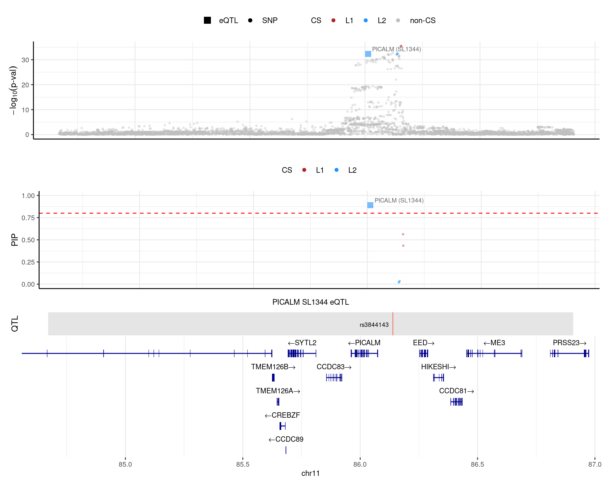
| Version | Author | Date |
|---|---|---|
| ee66032 | XSun | 2026-06-20 |
Region: 15_78223711_80568637
2026-06-20 19:22:28 INFO::Limit to protein coding genes 2026-06-20 19:22:28 INFO::focal id: ENSG00000103811|SL1344_eQTL 2026-06-20 19:22:28 INFO::focal molecular trait: CTSH SL1344 eQTL 2026-06-20 19:22:28 INFO::Range of locus: chr15:78223611-80568240 2026-06-20 19:22:29 INFO::focal molecular trait QTL positions: 78944951
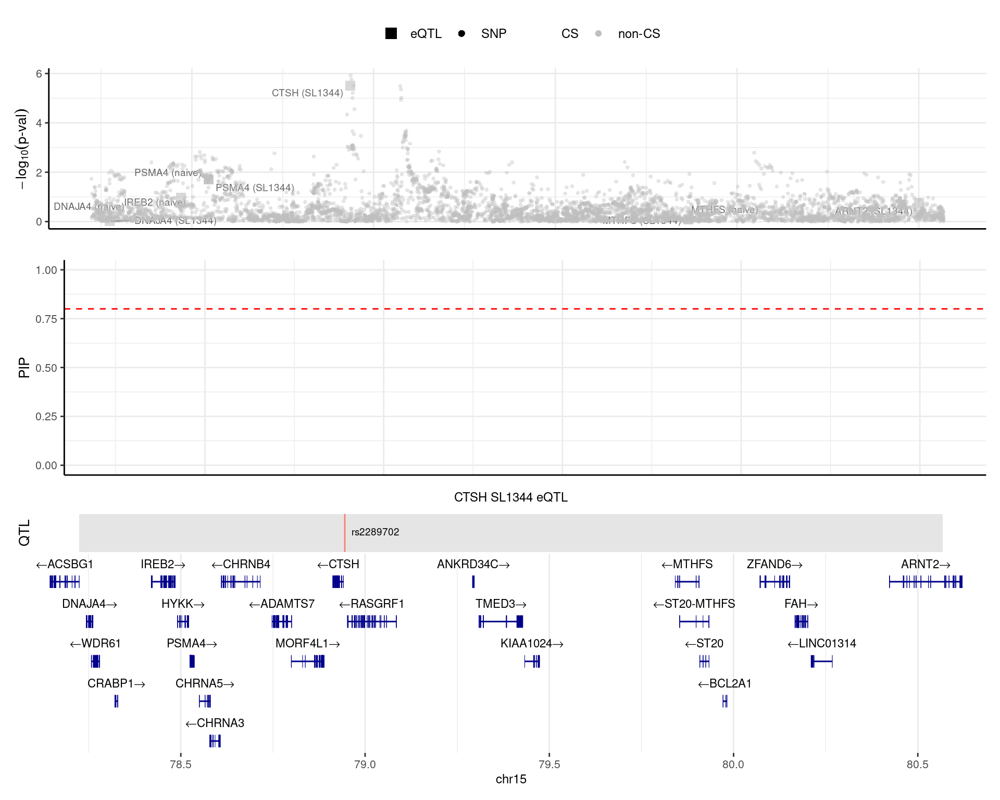
| Version | Author | Date |
|---|---|---|
| ee66032 | XSun | 2026-06-20 |
Region: 17_4792966_5838014
2026-06-20 19:22:30 INFO::Limit to protein coding genes 2026-06-20 19:22:30 INFO::focal id: ENSG00000029725|naive_eQTL 2026-06-20 19:22:30 INFO::focal molecular trait: RABEP1 naive eQTL 2026-06-20 19:22:30 INFO::Range of locus: chr17:4792950-5837901 2026-06-20 19:22:30 INFO::focal molecular trait QTL positions: 5255419
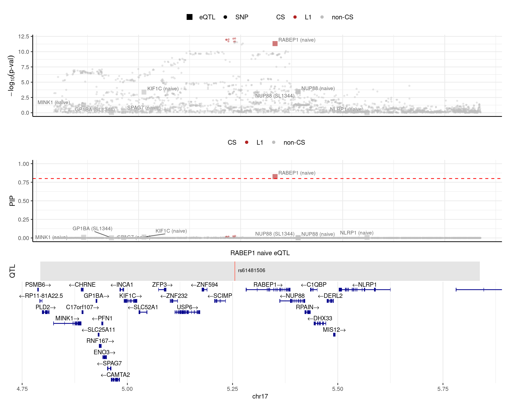
| Version | Author | Date |
|---|---|---|
| ee66032 | XSun | 2026-06-20 |
caQTL_SL1344 + eQTL_SL1344 (Joint)
param_joint <- readRDS(file.path(outputdir, "joint_caQTL_eQTL_SL1344", "AD.joint.param.shared_all.RDS"))Convergence
make_convergence_plots(param_joint, gwas_n)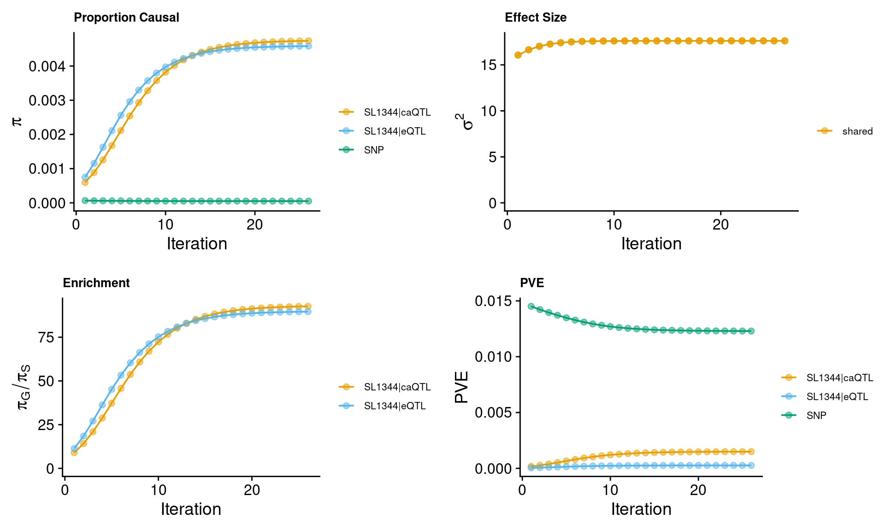
Parameters and Enrichment
ctwas_param_joint <- summarize_param(param_joint, gwas_n, enrichment_test = "fisher")
ctwas_param_joint$group_size
SL1344|caQTL SL1344|eQTL SNP
8747 1597 6661044
$group_prior
SL1344|caQTL SL1344|eQTL SNP
4.736715e-03 4.582166e-03 5.110987e-05
$group_prior_var
SL1344|caQTL SL1344|eQTL SNP
17.61237 17.61237 17.61237
$log_enrichment
SL1344|caQTL SL1344|eQTL
4.529121 4.495949
$log_enrichment_se
SL1344|caQTL SL1344|eQTL
0.1641912 0.3727809
$enrichment_pval
SL1344|caQTL SL1344|eQTL
1.009265e-63 4.869992e-12
$group_pve
SL1344|caQTL SL1344|eQTL SNP
0.0014968205 0.0002643681 0.0122993020
$total_pve
[1] 0.01406049
$prop_heritability
SL1344|caQTL SL1344|eQTL SNP
0.1064558 0.0188022 0.8747420 Heritability Pie Chart
plot_piechart_topn(ctwas_param_joint,
colors = c("#E69F00", "#56B4E9"),
by = "category",
title = "caQTL_SL1344 + eQTL_SL1344 - Percent of Heritability (PVE)")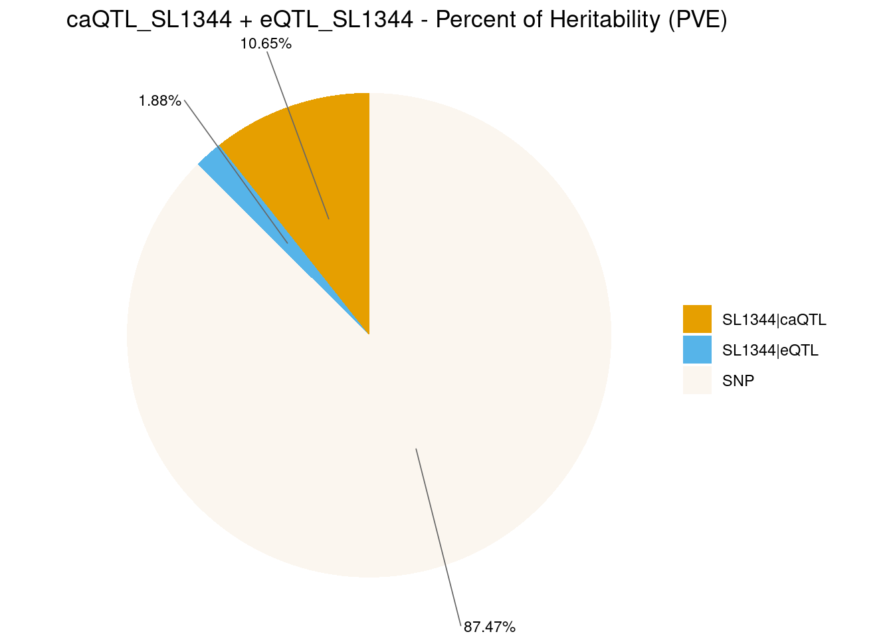
Fine-mapping results (PIP > 0.8)
finemap_joint <- readRDS(file.path(outputdir, "joint_caQTL_eQTL_SL1344",
"AD.joint.shared_all.L5.finemap_regions_res.RDS"))
fm_joint <- finemap_joint$finemap_res
traits_high_pip_joint <- fm_joint[fm_joint$type != "SNP" & fm_joint$susie_pip > 0.8, ]
traits_high_pip_joint <- traits_high_pip_joint[order(-traits_high_pip_joint$susie_pip), ]8 molecular traits with PIP > 0.8:
if (nrow(traits_high_pip_joint) > 0) {
datatable(traits_high_pip_joint,
caption = "Joint caQTL_SL1344 + eQTL_SL1344: traits with PIP > 0.8",
options = list(pageLength = 20, scrollX = TRUE))
} else {
cat("No traits found with PIP > 0.8.")
}Locus zoom plots
Locus zoom plots for regions containing molecular traits with PIP > 0.8.
weights_joint <- readRDS(file.path(outputdir, "joint_caQTL_eQTL_SL1344", "AD.joint.preprocessed.weights.RDS"))
mapping_table_joint <- rbind(
readRDS("/project/xinhe/xsun/AD_jubao/data/QTL_pmid29379200/ATAC_peak_mapping.RDS"),
readRDS("/project/xinhe/xsun/AD_jubao/data/QTL_pmid29379200/RNA_mapping.RDS")
)
fm_joint_anno <- fm_joint
fm_joint_anno$pval <- z2p(fm_joint_anno$z)
fm_joint_anno <- anno_finemap_res(fm_joint_anno,
snp_map = snp_map,
mapping_table = mapping_table_joint,
add_gene_annot = TRUE,
map_by = "molecular_id",
drop_unmapped = TRUE,
add_position = TRUE,
use_gene_pos = "mid")2026-06-20 19:22:48 INFO::Annotating fine-mapping result...
2026-06-20 19:22:48 INFO::Map molecular traits to genes
2026-06-20 19:22:57 INFO::Add gene positions
2026-06-20 19:22:58 INFO::Add SNP positionstop_regions_joint <- unique(fm_joint_anno$region_id[fm_joint_anno$group != "SNP" & fm_joint_anno$susie_pip > 0.8])for (region_id in top_regions_joint) {
cat(sprintf("\n#### Region: %s\n\n", region_id))
print(make_locusplot(
fm_joint_anno,
region_id = region_id,
ens_db = ens_db,
weights = weights_joint,
highlight_pip = 0.8,
filter_protein_coding_genes = FALSE,
filter_cs = F,
color_pval_by = "cs",
color_pip_by = "cs",
panel.heights = c(4, 4, 1, 4)
))
cat("\n\n")
}Region: 2_158720570_160913222
2026-06-20 19:23:07 INFO::focal id: ATAC_peak_147263|SL1344_caQTL 2026-06-20 19:23:07 INFO::focal molecular trait: ATAC_peak_147263 SL1344 caQTL 2026-06-20 19:23:07 INFO::Range of locus: chr2:158720695-160913244 2026-06-20 19:23:07 INFO::focal molecular trait QTL positions: 160428726
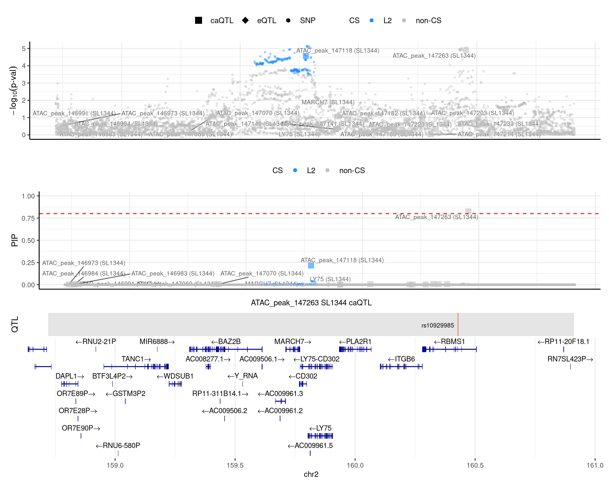
Region: 5_86471473_88094174
2026-06-20 19:23:09 INFO::focal id: ATAC_peak_214106|SL1344_caQTL 2026-06-20 19:23:09 INFO::focal molecular trait: ATAC_peak_214106 SL1344 caQTL 2026-06-20 19:23:09 INFO::Range of locus: chr5:86471473-88093891 2026-06-20 19:23:09 INFO::focal molecular trait QTL positions: 86997803
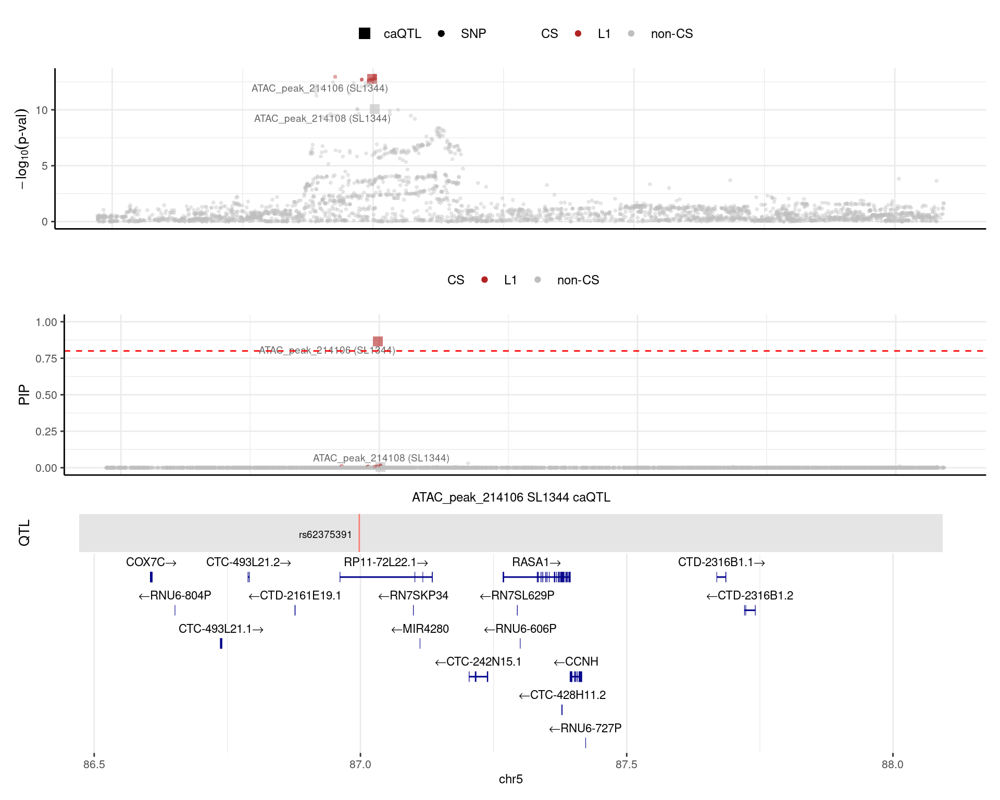
Region: 7_7769121_9083793
2026-06-20 19:23:11 INFO::focal id: ATAC_peak_244110|SL1344_caQTL 2026-06-20 19:23:11 INFO::focal molecular trait: ATAC_peak_244110 SL1344 caQTL 2026-06-20 19:23:11 INFO::Range of locus: chr7:7769021-9083496 2026-06-20 19:23:11 INFO::focal molecular trait QTL positions: 7815324
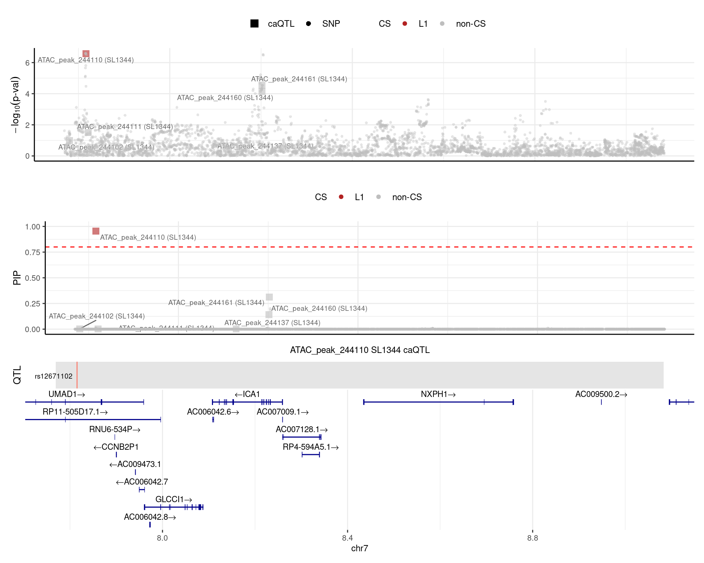
Region: 7_25869935_28320690
2026-06-20 19:23:12 INFO::focal id: ATAC_peak_245948|SL1344_caQTL 2026-06-20 19:23:12 INFO::focal molecular trait: ATAC_peak_245948 SL1344 caQTL 2026-06-20 19:23:12 INFO::Range of locus: chr7:25869975-28562708 2026-06-20 19:23:12 INFO::focal molecular trait QTL positions: 28135367
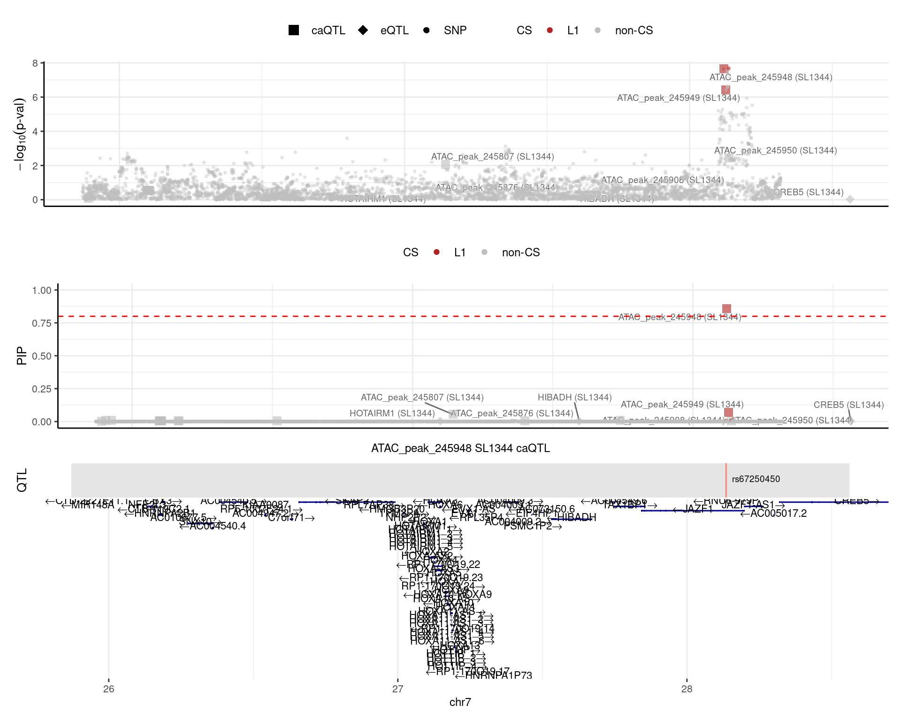
Region: 11_84670229_86908259
2026-06-20 19:23:14 INFO::focal id: ENSG00000073921|SL1344_eQTL 2026-06-20 19:23:14 INFO::focal molecular trait: PICALM SL1344 eQTL 2026-06-20 19:23:14 INFO::Range of locus: chr11:84670331-86907936 2026-06-20 19:23:14 INFO::focal molecular trait QTL positions: 86139201
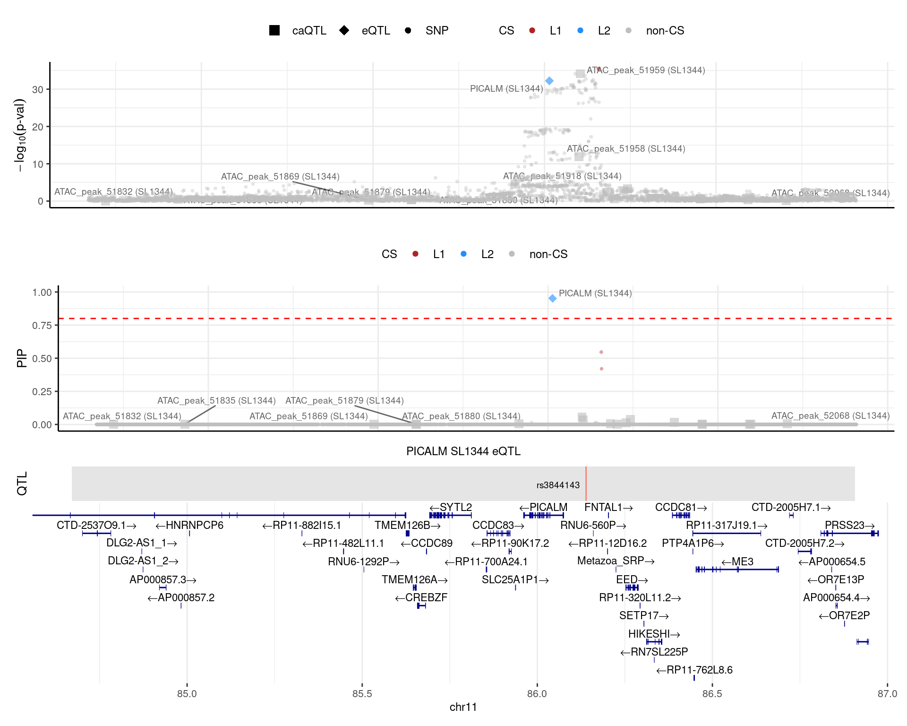
Region: 15_78223711_80568637
2026-06-20 19:23:19 INFO::focal id: ENSG00000103811|SL1344_eQTL 2026-06-20 19:23:19 INFO::focal molecular trait: CTSH SL1344 eQTL 2026-06-20 19:23:19 INFO::Range of locus: chr15:78223611-80568240 2026-06-20 19:23:19 INFO::focal molecular trait QTL positions: 78944951
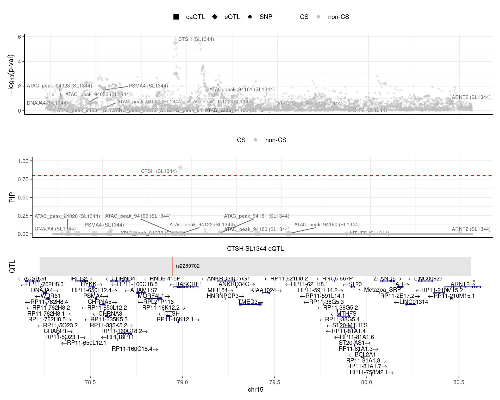
Region: 16_81738931_82714123
2026-06-20 19:23:20 INFO::focal id: ATAC_peak_104451|SL1344_caQTL 2026-06-20 19:23:20 INFO::focal molecular trait: ATAC_peak_104451 SL1344 caQTL 2026-06-20 19:23:20 INFO::Range of locus: chr16:81738831-82713965 2026-06-20 19:23:21 INFO::focal molecular trait QTL positions: 81867248
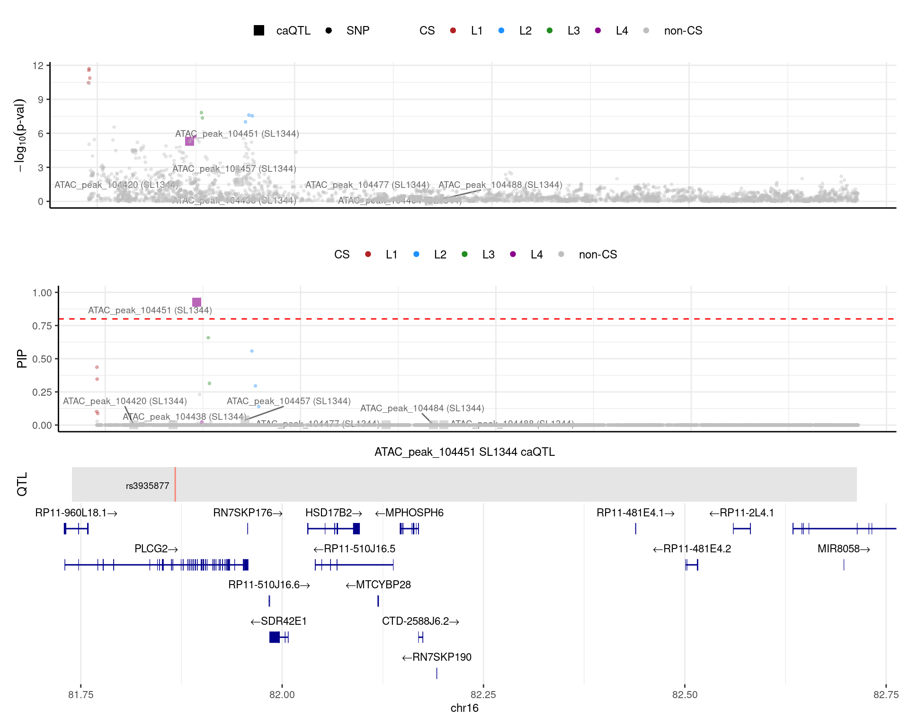
Region: 17_44979537_47798656
2026-06-20 19:23:23 INFO::focal id: ENSG00000238083|SL1344_eQTL 2026-06-20 19:23:23 INFO::focal molecular trait: LRRC37A2 SL1344 eQTL 2026-06-20 19:23:23 INFO::Range of locus: chr17:44979437-47797449 2026-06-20 19:23:23 INFO::focal molecular trait QTL positions: 46111701
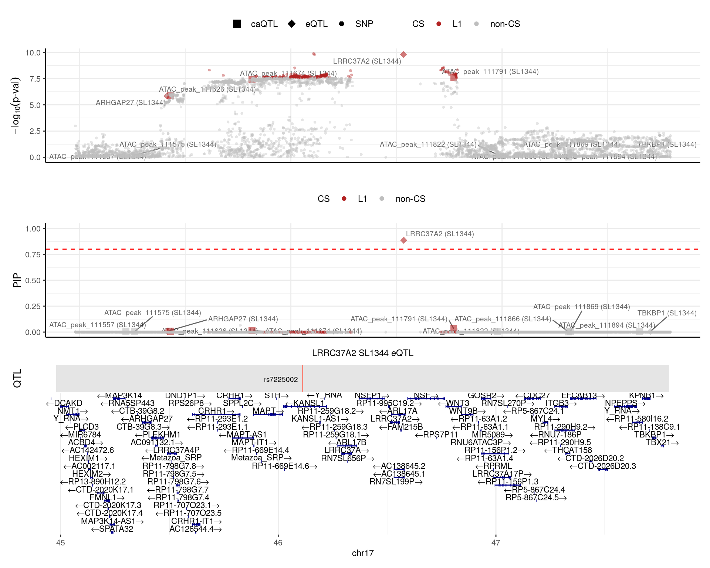
Peak Sets (caQTL in joint model)
A peak set is defined as all caQTL peaks that belong to the same credible set (CS) within the same LD region. The PIP of a peak set is the sum of the individual peak PIPs.
peaks_in_cs_joint <- fm_joint[fm_joint$type == "caQTL" & !is.na(fm_joint$cs), ]
mapping_joint_caQTL <- readRDS("/project/xinhe/xsun/AD_jubao/data/QTL_pmid29379200/ATAC_peak_mapping.RDS")
peaks_annot_joint <- merge(peaks_in_cs_joint, mapping_joint_caQTL, by = "molecular_id", all.x = TRUE)
peak_sets_joint <- do.call(rbind, lapply(
split(peaks_annot_joint, list(peaks_annot_joint$region_id, peaks_annot_joint$cs), drop = TRUE),
function(x) {
region_parts <- strsplit(x$region_id[1], "_")[[1]]
data.frame(
region_chr = as.integer(region_parts[1]),
region_id = x$region_id[1],
cs = x$cs[1],
n_peaks = nrow(x),
sum_pip = sum(x$susie_pip),
peaks = paste(x$molecular_id, collapse = ", "),
contexts = paste(x$context, collapse = ", "),
peak_coords = paste0("chr", x$chrom, ":", x$start, "-", x$end, collapse = "; "),
stringsAsFactors = FALSE
)
}
))
peak_sets_joint <- peak_sets_joint[order(-peak_sets_joint$sum_pip), ]
rownames(peak_sets_joint) <- NULL
cat("**Total peak sets:**", nrow(peak_sets_joint), "\n")**Total peak sets:** 13 PIP Distribution of Peak Sets (joint)
hist(peak_sets_joint$sum_pip, breaks = 20, col = "steelblue", border = "white",
main = "Distribution of peak set PIPs (joint model)",
xlab = "Sum PIP per peak set", ylab = "Count")
abline(v = 0.8, col = "red", lty = 2)
text(0.8, par("usr")[4] * 0.9, "PIP = 0.8", pos = 2, col = "red", cex = 0.8)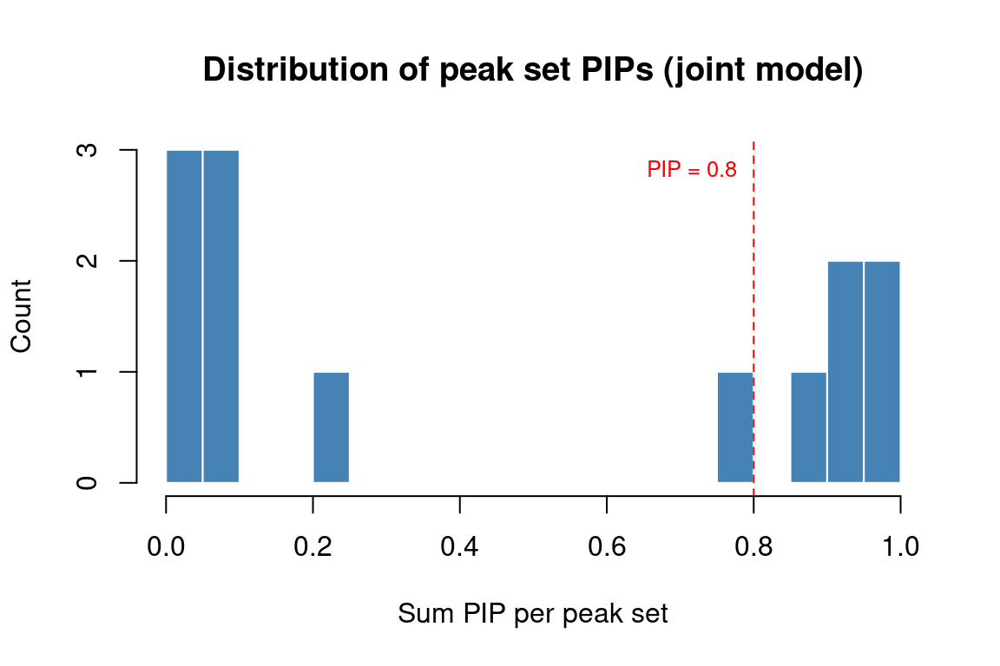
High-Confidence Peak Sets (sum PIP > 0.8, joint)
high_joint <- peak_sets_joint[peak_sets_joint$sum_pip > 0.8, ]
if (nrow(high_joint) > 0) {
display_high_joint <- high_joint[, c("region_chr", "region_id", "cs", "n_peaks",
"sum_pip", "peaks", "contexts", "peak_coords")]
colnames(display_high_joint) <- c("Chr", "Region", "CS", "N peaks",
"Sum PIP", "Peaks", "Contexts", "Peak coordinates")
datatable(display_high_joint, rownames = FALSE,
options = list(pageLength = 25, scrollX = TRUE),
caption = "Peak sets with sum PIP > 0.8 (joint model)") %>%
formatRound("Sum PIP", digits = 4)
} else {
cat("No peak sets with sum PIP > 0.8.\n")
}Locus zoom plots for high-confidence peak sets (joint)
Locus zoom plots for regions containing peak sets with sum PIP > 0.8.
top_regions_peakset_joint <- unique(high_joint$region_id)for (region_id in top_regions_peakset_joint) {
cat(sprintf("\n#### Region: %s\n\n", region_id))
print(make_locusplot(
fm_joint_anno,
region_id = region_id,
ens_db = ens_db,
weights = weights_joint,
highlight_pip = 0.8,
filter_protein_coding_genes = FALSE,
filter_cs = F,
color_pval_by = "cs",
color_pip_by = "cs",
panel.heights = c(4, 4, 1, 4)
))
cat("\n\n")
}Region: 14_90830516_92665954
2026-06-20 19:23:30 INFO::focal id: ATAC_peak_85694|SL1344_caQTL 2026-06-20 19:23:30 INFO::focal molecular trait: ATAC_peak_85694 SL1344 caQTL 2026-06-20 19:23:30 INFO::Range of locus: chr14:90830416-92665770 2026-06-20 19:23:30 INFO::focal molecular trait QTL positions: 92489041
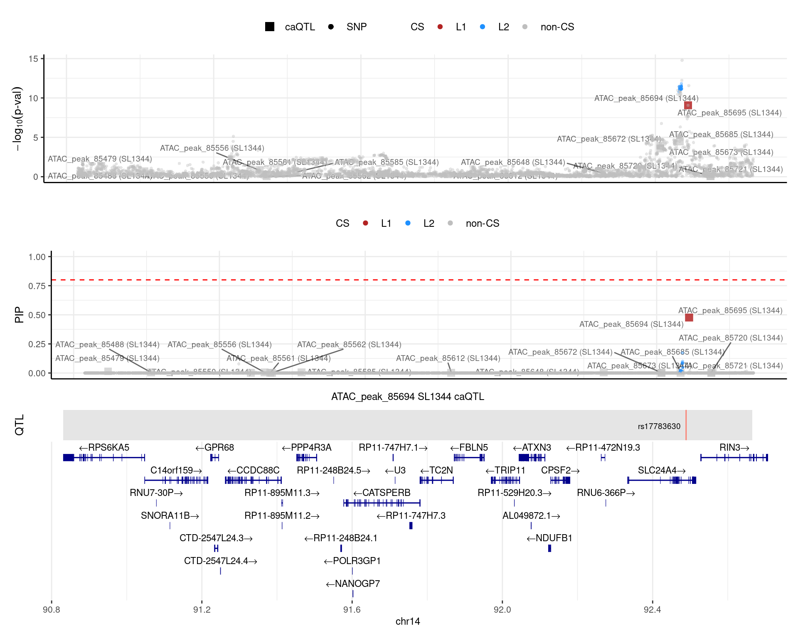
Region: 7_7769121_9083793
2026-06-20 19:23:32 INFO::focal id: ATAC_peak_244110|SL1344_caQTL 2026-06-20 19:23:32 INFO::focal molecular trait: ATAC_peak_244110 SL1344 caQTL 2026-06-20 19:23:32 INFO::Range of locus: chr7:7769021-9083496 2026-06-20 19:23:32 INFO::focal molecular trait QTL positions: 7815324
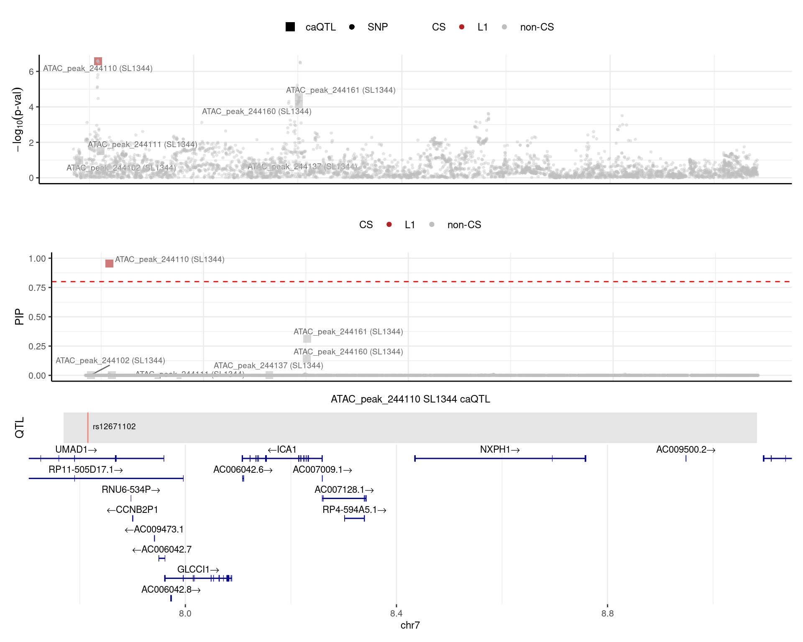
Region: 7_25869935_28320690
2026-06-20 19:23:33 INFO::focal id: ATAC_peak_245948|SL1344_caQTL 2026-06-20 19:23:33 INFO::focal molecular trait: ATAC_peak_245948 SL1344 caQTL 2026-06-20 19:23:33 INFO::Range of locus: chr7:25869975-28562708 2026-06-20 19:23:33 INFO::focal molecular trait QTL positions: 28135367
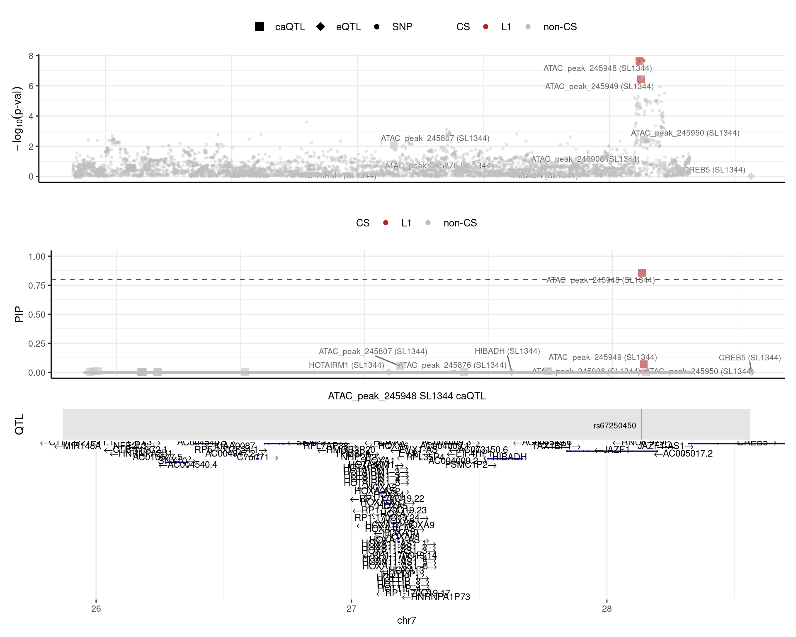
Region: 16_81738931_82714123
2026-06-20 19:23:36 INFO::focal id: ATAC_peak_104451|SL1344_caQTL 2026-06-20 19:23:36 INFO::focal molecular trait: ATAC_peak_104451 SL1344 caQTL 2026-06-20 19:23:36 INFO::Range of locus: chr16:81738831-82713965 2026-06-20 19:23:36 INFO::focal molecular trait QTL positions: 81867248
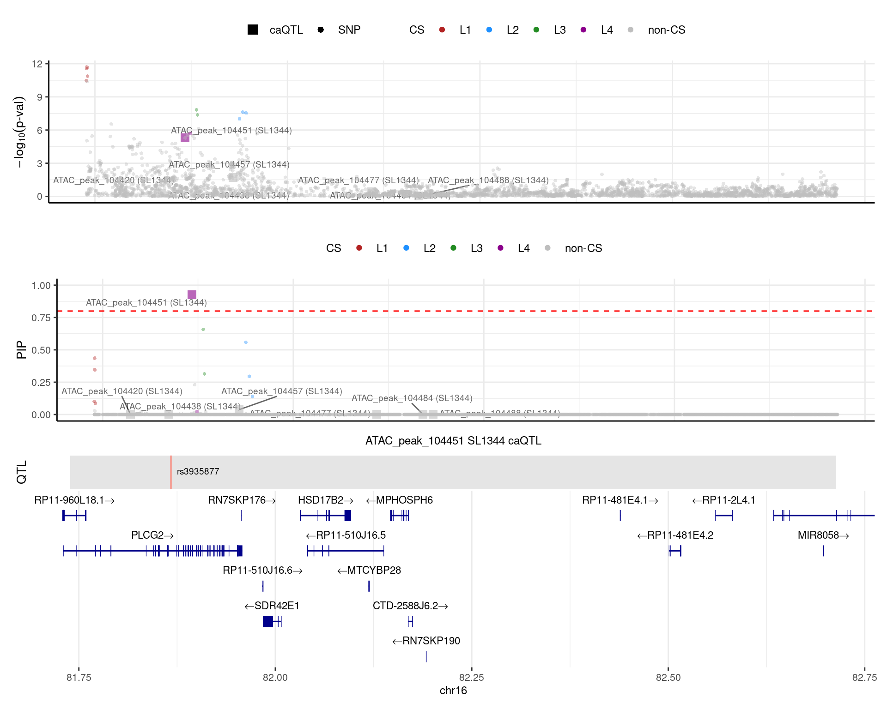
Region: 5_86471473_88094174
2026-06-20 19:23:37 INFO::focal id: ATAC_peak_214106|SL1344_caQTL 2026-06-20 19:23:37 INFO::focal molecular trait: ATAC_peak_214106 SL1344 caQTL 2026-06-20 19:23:37 INFO::Range of locus: chr5:86471473-88093891 2026-06-20 19:23:37 INFO::focal molecular trait QTL positions: 86997803
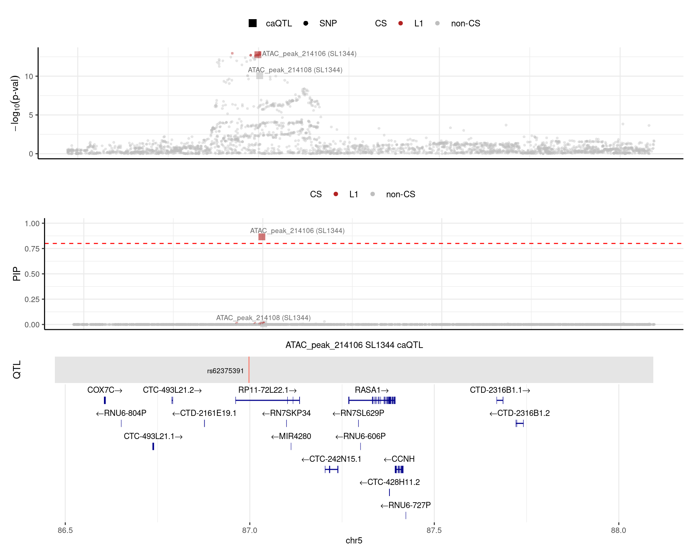
sessionInfo()R version 4.2.0 (2022-04-22)
Platform: x86_64-pc-linux-gnu (64-bit)
Running under: CentOS Linux 7 (Core)
Matrix products: default
BLAS/LAPACK: /software/openblas-0.3.13-el7-x86_64/lib/libopenblas_haswellp-r0.3.13.so
locale:
[1] C
attached base packages:
[1] stats4 grid stats graphics grDevices utils datasets
[8] methods base
other attached packages:
[1] EnsDb.Hsapiens.v86_2.99.0 ensembldb_2.20.2
[3] AnnotationFilter_1.20.0 GenomicFeatures_1.48.3
[5] AnnotationDbi_1.58.0 Biobase_2.56.0
[7] GenomicRanges_1.48.0 GenomeInfoDb_1.39.9
[9] IRanges_2.30.0 S4Vectors_0.34.0
[11] BiocGenerics_0.42.0 VennDiagram_1.7.3
[13] futile.logger_1.4.3 RSQLite_2.3.1
[15] dplyr_1.1.4 ggrepel_0.9.1
[17] DT_0.22 ggplot2_4.0.3
[19] ctwas_0.6.1
loaded via a namespace (and not attached):
[1] rjson_0.2.21 ellipsis_0.3.2
[3] rprojroot_2.0.3 XVector_0.36.0
[5] locuszoomr_0.2.1 base64enc_0.1-3
[7] fs_1.5.2 dichromat_2.0-0.1
[9] rstudioapi_0.13 farver_2.1.0
[11] bit64_4.0.5 fansi_1.0.3
[13] xml2_1.3.3 logging_0.10-108
[15] codetools_0.2-18 cachem_1.0.6
[17] knitr_1.39 jsonlite_1.8.0
[19] workflowr_1.7.0 Rsamtools_2.12.0
[21] dbplyr_2.1.1 png_0.1-7
[23] readr_2.1.2 compiler_4.2.0
[25] httr_1.4.3 assertthat_0.2.1
[27] Matrix_1.5-3 fastmap_1.1.0
[29] lazyeval_0.2.2 cli_3.6.1
[31] formatR_1.12 later_1.3.0
[33] htmltools_0.5.2 prettyunits_1.1.1
[35] tools_4.2.0 gtable_0.3.6
[37] glue_1.6.2 GenomeInfoDbData_1.2.8
[39] rappdirs_0.3.3 Rcpp_1.0.12
[41] jquerylib_0.1.4 vctrs_0.6.5
[43] Biostrings_2.64.0 rtracklayer_1.56.0
[45] crosstalk_1.2.0 xfun_0.41
[47] stringr_1.5.1 irlba_2.3.5
[49] lifecycle_1.0.4 restfulr_0.0.14
[51] XML_3.99-0.14 zoo_1.8-10
[53] zlibbioc_1.42.0 scales_1.4.0
[55] gggrid_0.2-0 hms_1.1.1
[57] promises_1.2.0.1 MatrixGenerics_1.8.0
[59] ProtGenerics_1.28.0 parallel_4.2.0
[61] SummarizedExperiment_1.26.1 lambda.r_1.2.4
[63] LDlinkR_1.2.3 RColorBrewer_1.1-3
[65] yaml_2.3.5 curl_4.3.2
[67] memoise_2.0.1 sass_0.4.1
[69] biomaRt_2.54.1 stringi_1.7.6
[71] highr_0.9 BiocIO_1.6.0
[73] filelock_1.0.2 BiocParallel_1.30.3
[75] repr_1.1.4 rlang_1.1.2
[77] pkgconfig_2.0.3 matrixStats_0.62.0
[79] bitops_1.0-7 evaluate_0.15
[81] lattice_0.20-45 purrr_1.0.2
[83] labeling_0.4.2 GenomicAlignments_1.32.0
[85] htmlwidgets_1.5.4 cowplot_1.1.1
[87] bit_4.0.4 tidyselect_1.2.0
[89] magrittr_2.0.3 AMR_2.1.1
[91] R6_2.5.1 generics_0.1.4
[93] DelayedArray_0.22.0 DBI_1.2.2
[95] withr_2.5.0 pillar_1.9.0
[97] whisker_0.4 mixsqp_0.3-43
[99] KEGGREST_1.36.3 RCurl_1.98-1.7
[101] tibble_3.2.1 crayon_1.5.1
[103] futile.options_1.0.1 utf8_1.2.2
[105] BiocFileCache_2.4.0 plotly_4.10.0
[107] tzdb_0.4.0 rmarkdown_2.25
[109] progress_1.2.2 data.table_1.14.2
[111] blob_1.2.3 git2r_0.30.1
[113] S7_0.2.0 digest_0.6.29
[115] tidyr_1.3.0 httpuv_1.6.5
[117] viridisLite_0.4.0 skimr_2.1.4
[119] bslib_0.3.1